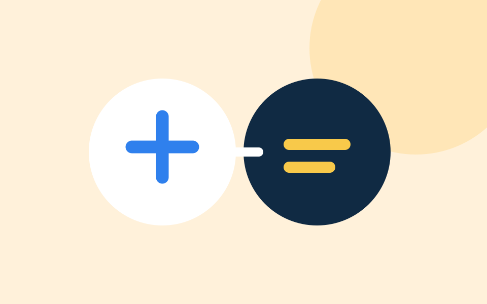

Proposed · Engineering notes
Lessons from Building a Multi-Tenant SaaS Platform
Architecture decisions, tenant isolation, authentication, and scaling considerations.
Engineering Journal
Notes on engineering decisions, teamwork, and learning through real software projects.
Learn together. Build something real.
We share the thinking behind the work, the questions we ask, and what we learn along the way.
On the editorial desk
These are proposed articles, not published stories. Each one will include a real author, review, and date when ready.
Architecture decisions, tenant isolation, authentication, and scaling considerations.
How review can improve implementation quality and share engineering knowledge.
Practical lessons in deployment, environments, and operating software.

The move from individual exercises to contributing within a team.
How stories get here
We publish a story only after checking its technical details, author contribution, and permission to share the work. Approved images should have useful alt text and must not reveal confidential information.